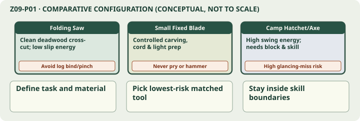

Z09-P01 · Tools and construction · New manuscript
Match hand tools to task limits and operator skill
Choose the lowest-risk, task-appropriate hand tool before starting any camp cutting, digging or repair job.
When it applies · Selecting knives, saws, hatchets, shovels or multi-tools for backcountry, camp or home-outage tasks.
Equipment · Route-appropriate maintained hand tools, protective sheaths and pre-use inspection habit.

Actions
- Match tool design to the actual material and cut—use saws for cross-cutting deadwood, small knives for fine shaping and proper levers or shovels for prying and digging.[K01, K02, K03]
- Favor lower-energy controlled tools (folding saw, compact fixed blade) over high-energy swinging tools (axes, machetes) whenever fatigue, tight space or limited training increases miss risk.[K01, K03, ED]
- Leave unnecessary heavy or specialized tools out of field kits and never attempt high-risk felling or structural fabrication beyond your training and equipment.[K01, K10, ED]
Failure recognition · Swinging a heavy camp hatchet to chop thin kindling on uneven ground when a folding saw would cut cleanly with far lower slip risk.[K01, K03]
Verify · Name the exact cut or mechanical task, confirm the tool matches it and check that operator dexterity and lighting are adequate.[K01, K03, ED]
Stop or change course · If the right tool is missing or the task exceeds safe camp-tool limits, choose an alternate low-risk method rather than improvising unsafe blade or impact substitutes.[K01, K02, K10]
Evidence and editorial notes
- K01 · OSHA · Hand and Power Tools Safety and Health Topics (current web edition)
- Section: Hand Tools > General Safety Rules · Conditions: Use of knives, saws, axes, hammers and hand tools
Support: Keep hand tools in good condition, use the right tool for the job, examine each tool for damage before use, operate according to instructions and wear appropriate personal protective equipment.
Limitations: General occupational rules do not replace task-specific forestry or field-tool training. · Conflicting evidence: None; baseline tool safety framework.
Editorial note: Anchors tool selection, pre-use inspection and operating boundary cards in Z09. · Specialist reviewer: Tool safety and occupational safety
Primary source · checked 2026-11-24 - K02 · OSHA · Hand and Power Tools (OSHA 3080) (agency PDF)
- Section: Hand Tools > Knives, Chisels, Impact and Wrenches · Conditions: Manual cutting, striking and prying operations
Support: Direct cutting blades away from the body and bystanders, never use cracked wooden handles or mushroomed striking heads, and do not substitute wrenches or blades as pry bars.
Limitations: Does not specify material tensile ratings for improvised handles. · Conflicting evidence: None; directly informs safe cutting and impact-tool failure cards.
Editorial note: Prevents blade slip, splintered-handle and spalling-metal injuries. · Specialist reviewer: Tool safety and wilderness medicine
Primary source · checked 2026-11-24
Current assessment · A04-K02 (2026-11-25) · Open: support partial or missing (A04): Supports misuse and defective equipment limits in occupational work. Exact cutting lane and equipment guidance varies by tool kept under specialist review. Limits: Specialist review PENDING (Tool safety and wilderness medicine); publication HOLD. All release decisions pending. - K03 · USDA Forest Service · Handtools for Trail Work (0523-2810-MTDC) (agency handbook)
- Section: Tool Selection, Inspection and Safe Transport · Conditions: Trail and campsite hand tools (axes, saws, shovels, pulaskis, wedges)
Support: Inspect handles for splits, loose heads and secure wedges before every use; sheath sharp edges during carry and maintain a clear work circle around swinging tools.
Limitations: Forestry guidelines apply to maintained commercial tools; improvised stone or salvaged blades carry higher failure risk. · Conflicting evidence: None; aligns with OSHA-3080.
Editorial note: Grounds woodworking, swinging-tool clearance, carrying and maintenance cards. · Specialist reviewer: Forestry tool safety and trail maintenance
Primary source · checked 2026-11-24 - K10 · USDA Forest Service · Handtools for Trail Work PDF (agency PDF)
- Section: Felling and Overhead Timber Exclusions · Conditions: Camp wood preparation and trail clearing
Support: Do not fell standing trees or work beneath hung-up limbs without specialized training and gear; restrict routine camp woodworking to small sound downed deadwood where lawful.
Limitations: Standing dead trees (snags) fail unpredictably under vibration or wedging. · Conflicting evidence: Aligns with E13 and C17.
Editorial note: Reinforces strict downed-wood-only woodworking boundary. · Specialist reviewer: Forestry safety and land management
Primary source · checked 2026-11-24
Source lineage · OSHA hand tools and USFS trail handtools; new manuscript · Classification · New manuscript.